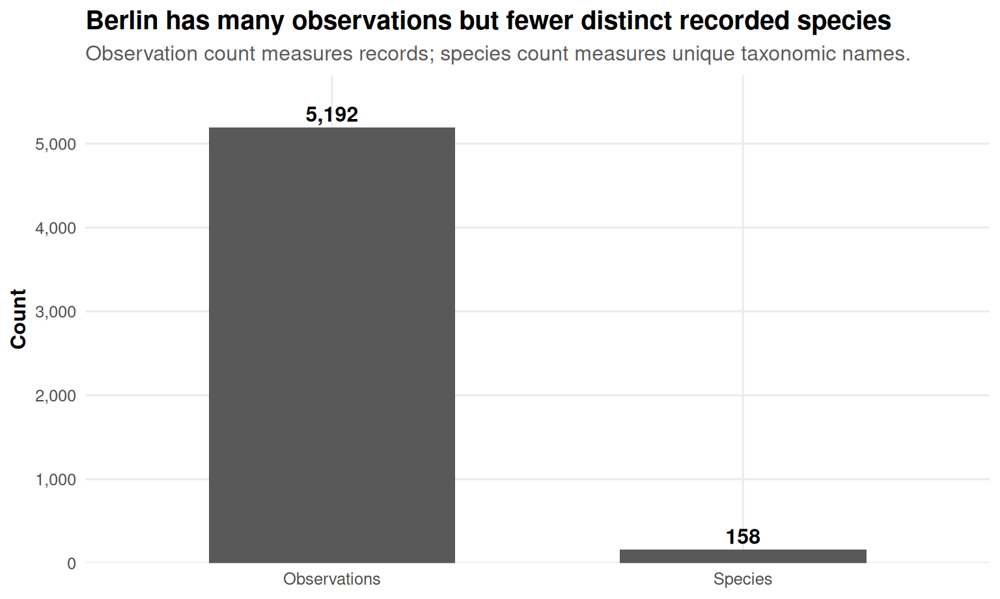
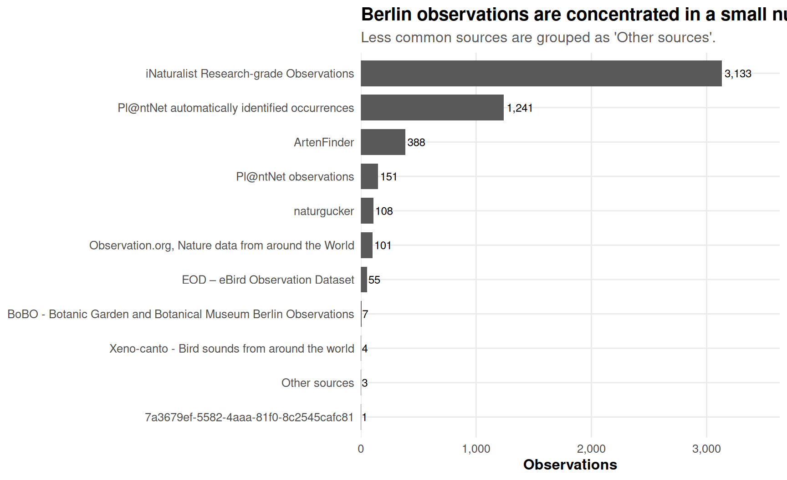
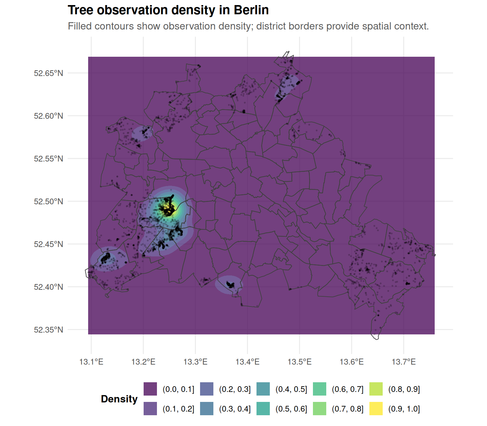
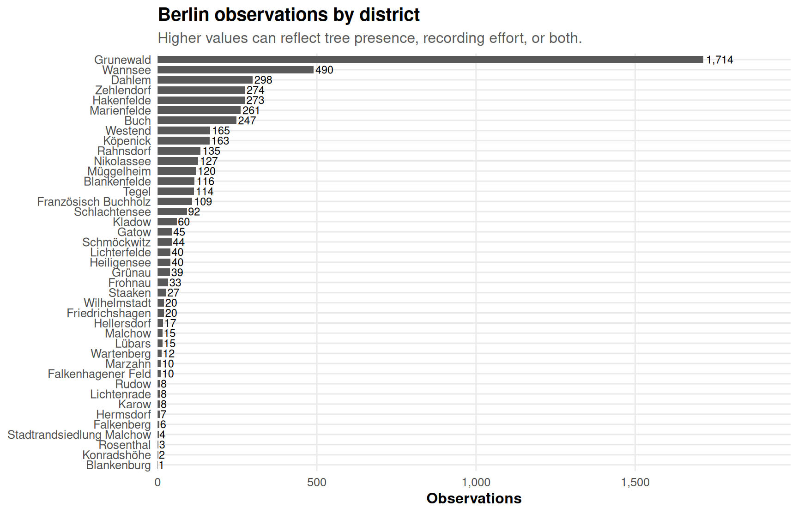
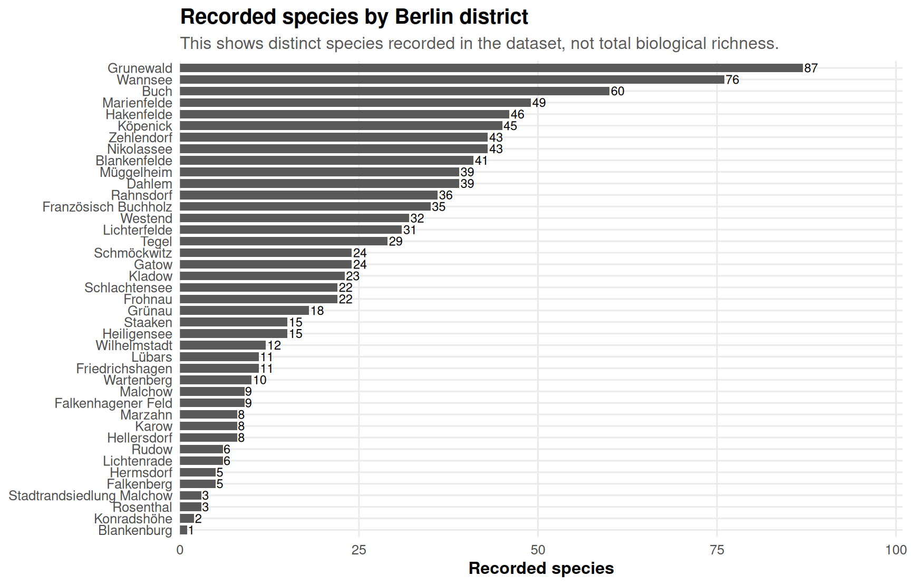
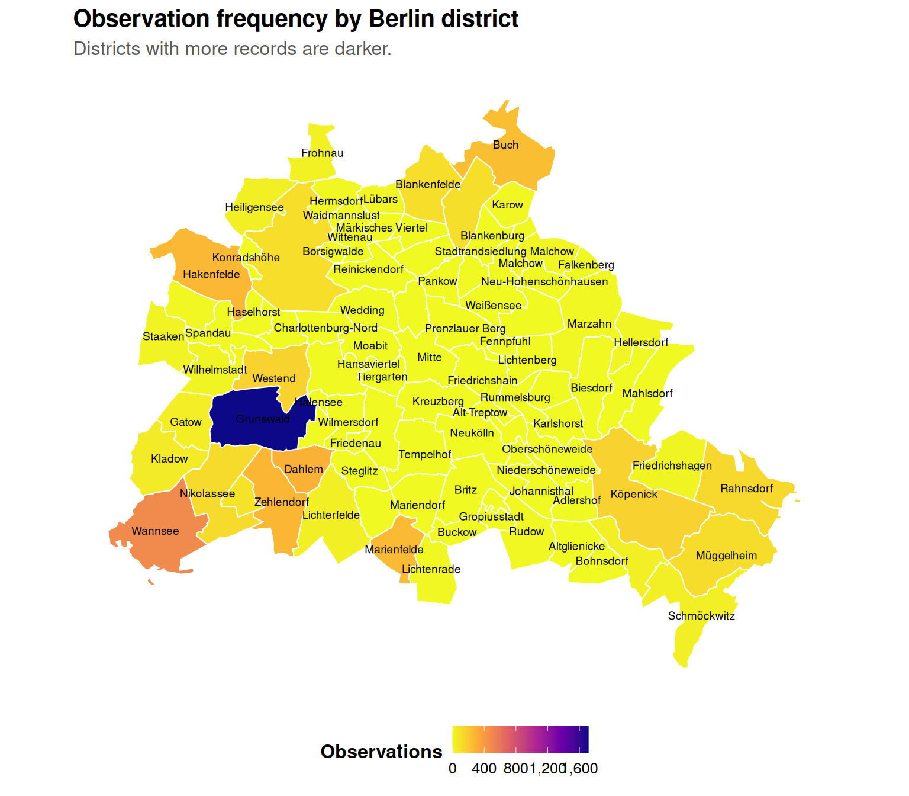
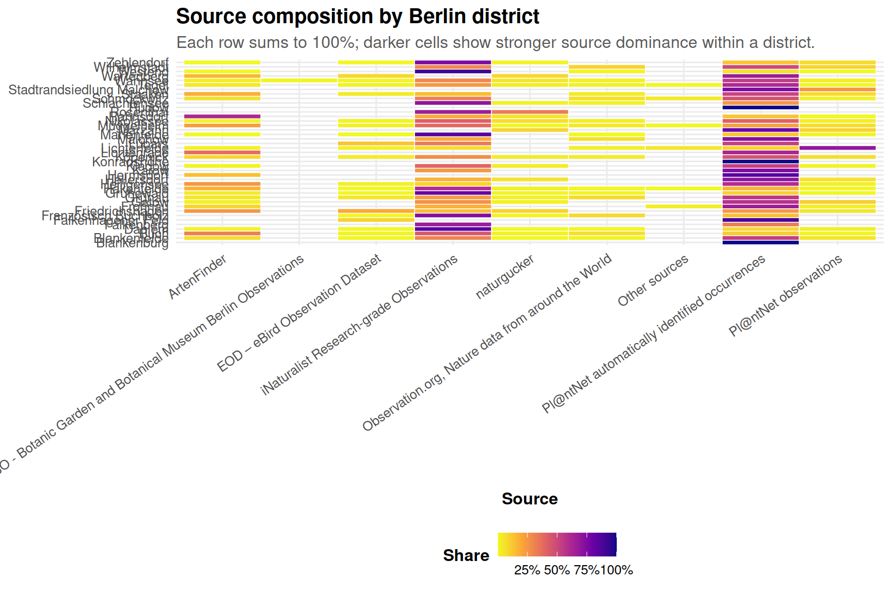
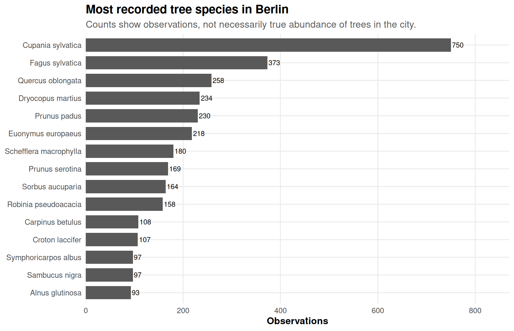

| item | value |
|---|---|
| Input file | GlobalGeoTree.csv |
| Rows in input file | 6,263,345 |
| Rows after coordinate/species cleaning | 6,263,345 |
| Countries after cleaning | 221 |
GlobalGeoTree Berlin: Observations, Sources, and District Distribution
1 Purpose
This report focuses only on Berlin. It answers three questions:
- How many GlobalGeoTree observations and recorded species are available for Berlin?
- Which data sources contribute Berlin observations?
- How are tree observations distributed across Berlin districts?
The district-level analysis requires Berlin district polygons. The report first tries to read a local GeoJSON file. If no local file exists, it tries to download a simple Berlin district GeoJSON. If neither option works, the report falls back to a Berlin bounding-box analysis and shows a point-density map without district borders.
2 Setup
3 Load observations
4 Preview of the dataset
The table below shows the first rows of the cleaned observations file. This is useful for checking column names and whether fields such as source, year, longitude, and latitude are available.
| sample_id | country_code | level0 | level1_family | level2_genus | level3_species | location | source | species_key | year | longitude | latitude |
|---|---|---|---|---|---|---|---|---|---|---|---|
| 1 | MW | Evergreen Broadleaf | Acanthaceae | Anisotes | Anisotes formosissimus | Malawi | iNaturalist Research-grade Observations | 5,576,177 | 2,024 | 34.770179 | -16.244345 |
| 2 | MZ | Evergreen Broadleaf | Acanthaceae | Anisotes | Anisotes formosissimus | Mozambique | iNaturalist Research-grade Observations | 5,576,177 | 2,018 | 34.342119 | -18.961792 |
| 3 | MZ | Evergreen Broadleaf | Acanthaceae | Anisotes | Anisotes sessiliflorus | Mozambique | iNaturalist Research-grade Observations | 7,264,409 | 2,022 | 34.339832 | -18.600213 |
| 4 | MZ | Evergreen Broadleaf | Acanthaceae | Anisotes | Anisotes sessiliflorus | Mozambique | iNaturalist Research-grade Observations | 7,264,409 | 2,015 | 34.340500 | -18.599860 |
| 5 | TZ | Evergreen Broadleaf | Acanthaceae | Avicennia | Avicennia marina | Tanzania, United Republic of | iNaturalist Research-grade Observations | 2,925,403 | 2,023 | 39.490521 | -6.148904 |
| 6 | KE | Evergreen Broadleaf | Acanthaceae | Avicennia | Avicennia spec | Kenya | naturgucker | 2,925,398 | 2,023 | 39.945604 | -3.285171 |
| 7 | NG | Evergreen Broadleaf | Acanthaceae | Avicennia | Avicennia spec | Nigeria | Biodiversity of Some Coastal Communities in Akwa-Ibom State, Nigeria | 2,925,398 | 2,021 | 8.031336 | 4.556238 |
| 8 | NG | Evergreen Broadleaf | Acanthaceae | Avicennia | Avicennia spec | Nigeria | Biodiversity of Some Coastal Communities in Akwa-Ibom State, Nigeria | 2,925,398 | 2,021 | 8.038207 | 4.557545 |
| 9 | NG | Evergreen Broadleaf | Acanthaceae | Avicennia | Avicennia spec | Nigeria | Flora of Coastal Environment in Cross-River State, Nigeria | 2,925,398 | 2,019 | 8.519425 | 4.779849 |
| 10 | NG | Evergreen Broadleaf | Acanthaceae | Avicennia | Avicennia spec | Nigeria | Flora of Coastal Environment in Cross-River State, Nigeria | 2,925,398 | 2,019 | 8.450121 | 4.787425 |
5 Load Berlin district boundaries
| item | value |
|---|---|
| District boundary status | Downloaded district boundaries from https://raw.githubusercontent.com/codeforgermany/click_that_hood/main/public/data/berlin.geojson |
| Number of district polygons | 97 |
6 Filter observations to Berlin
If district polygons are available, Berlin observations are identified by spatially joining Germany observations to Berlin district polygons. This is the preferred method because it avoids relying on text fields such as location.
If district polygons are not available, the report uses an approximate Berlin bounding box. This fallback is useful for a quick check, but it is less precise than district polygons.
| metric | value |
|---|---|
| Berlin filtering method | Spatial join to Berlin district polygons |
| Berlin observations | 5,192 |
| Berlin recorded species | 158 |
| Available source values | 13 |
| Available years | 2015–2024 |
7 How many observations and species are available for Berlin?

8 What are the sources of Berlin observations?
| source | observations | share |
|---|---|---|
| iNaturalist Research-grade Observations | 3,133 | 60.3% |
| Pl@ntNet automatically identified occurrences | 1,241 | 23.9% |
| ArtenFinder | 388 | 7.5% |
| Pl@ntNet observations | 151 | 2.9% |
| naturgucker | 108 | 2.1% |
| Observation.org, Nature data from around the World | 101 | 1.9% |
| EOD – eBird Observation Dataset | 55 | 1.1% |
| BoBO - Botanic Garden and Botanical Museum Berlin Observations | 7 | 0.1% |
| Xeno-canto - Bird sounds from around the world | 4 | 0.1% |
| 7a3679ef-5582-4aaa-81f0-8c2545cafc81 | 1 | 0.0% |
| Database for alien invasive plants occurrences in Germany | 1 | 0.0% |
| Database of field studies on environmental impacts of invasive plant species in Europe | 1 | 0.0% |
| Spatially explicit database of tree related microhabitats (TreMs) | 1 | 0.0% |

9 Spatial distribution of Berlin observations

10 Tree distribution by Berlin district
| district | observations | species | sources |
|---|---|---|---|
| Grunewald | 1,714 | 87 | 7 |
| Wannsee | 490 | 76 | 8 |
| Dahlem | 298 | 39 | 7 |
| Zehlendorf | 274 | 43 | 6 |
| Hakenfelde | 273 | 46 | 8 |
| Marienfelde | 261 | 49 | 6 |
| Buch | 247 | 60 | 7 |
| Westend | 165 | 32 | 5 |
| Köpenick | 163 | 45 | 7 |
| Rahnsdorf | 135 | 36 | 5 |
| Nikolassee | 127 | 43 | 7 |
| Müggelheim | 120 | 39 | 8 |
| Blankenfelde | 116 | 41 | 7 |
| Tegel | 114 | 29 | 8 |
| Französisch Buchholz | 109 | 35 | 5 |
| Schlachtensee | 92 | 22 | 4 |
| Kladow | 60 | 23 | 5 |
| Gatow | 45 | 24 | 5 |
| Schmöckwitz | 44 | 24 | 7 |
| Heiligensee | 40 | 15 | 5 |
| Lichterfelde | 40 | 31 | 8 |
| Grünau | 39 | 18 | 6 |
| Frohnau | 33 | 22 | 5 |
| Staaken | 27 | 15 | 6 |
| Friedrichshagen | 20 | 11 | 6 |
| Wilhelmstadt | 20 | 12 | 4 |
| Hellersdorf | 17 | 8 | 4 |
| Lübars | 15 | 11 | 3 |
| Malchow | 15 | 9 | 3 |
| Wartenberg | 12 | 10 | 4 |
| Falkenhagener Feld | 10 | 9 | 2 |
| Marzahn | 10 | 8 | 3 |
| Karow | 8 | 8 | 2 |
| Lichtenrade | 8 | 6 | 2 |
| Rudow | 8 | 6 | 1 |
| Hermsdorf | 7 | 5 | 2 |
| Falkenberg | 6 | 5 | 2 |
| Stadtrandsiedlung Malchow | 4 | 3 | 2 |
| Rosenthal | 3 | 3 | 2 |
| Konradshöhe | 2 | 2 | 1 |
| Blankenburg | 1 | 1 | 1 |



11 Source patterns across districts

12 Top recorded species in Berlin
| level3_species | observations | share |
|---|---|---|
| Cupania sylvatica | 750 | 14.4% |
| Fagus sylvatica | 373 | 7.2% |
| Quercus oblongata | 258 | 5.0% |
| Dryocopus martius | 234 | 4.5% |
| Prunus padus | 230 | 4.4% |
| Euonymus europaeus | 218 | 4.2% |
| Schefflera macrophylla | 180 | 3.5% |
| Prunus serotina | 169 | 3.3% |
| Sorbus aucuparia | 164 | 3.2% |
| Robinia pseudoacacia | 158 | 3.0% |
| Carpinus betulus | 108 | 2.1% |
| Croton laccifer | 107 | 2.1% |
| Sambucus nigra | 97 | 1.9% |
| Symphoricarpos albus | 97 | 1.9% |
| Alnus glutinosa | 93 | 1.8% |

13 Interpretation notes
The key distinction in this Berlin analysis is between observation frequency and tree abundance. A district with many records may have many trees, but it may also have more active observers, better platform coverage, or more accessible public spaces. Similarly, a frequently recorded species is not automatically the most common biological species in Berlin; it is the most common species in this dataset.
District-level maps are therefore best interpreted as maps of recorded tree observations, not direct ecological census maps.
14 Reproducibility notes
For stable district maps, save a Berlin district GeoJSON file as:
berlin_districts.geojsonor:
data/external/berlin_districts.geojsonIf no district file is found, this report tries to download one automatically. If the download fails, district-level visualizations are replaced with a fallback note and a Berlin bounding-box density map.